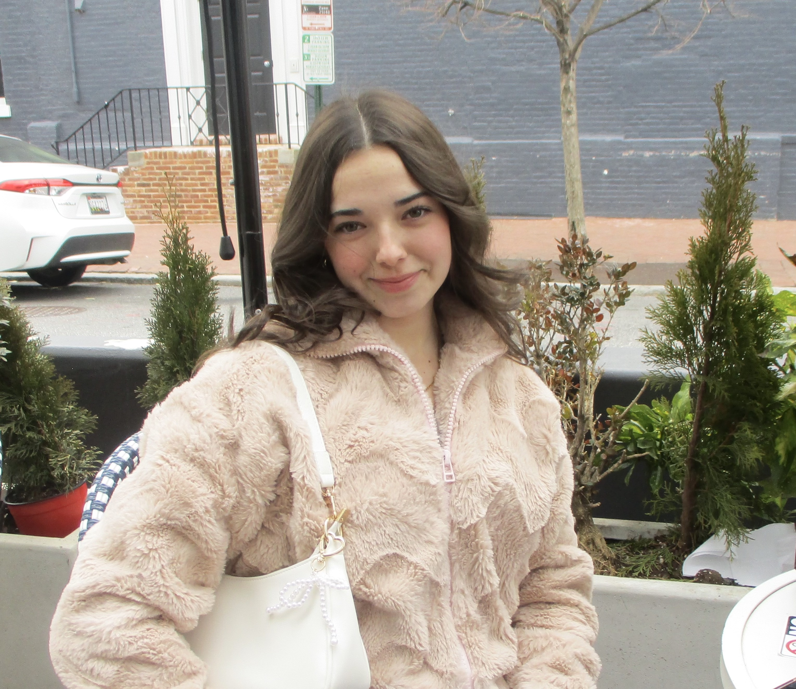

My name is Sophia Herndon and I am a sophomore student at the University of Maryland. I am majoring in journalism and minoring in creative writing. I am specifically interested in newswriting and copyediting. I am hoping to eventually become a local news reporter after I graduate.
I currently work as a staff writer for Stories Beneath the Shell, a UMD student publication. I am also a section editor for The Campus Trainer. This summer, I am interning with Triangle Media Partners in North Carolina where I will work as an editorial intern. I have really enjoyed my time in College Park and I look forward to gaining new experiences and developing my career in journalism.
